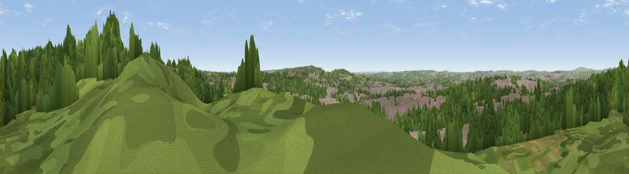

Viewpoint near Hulme
#27260 in England · top 42% of its area beats it · near Hulme · open accessWhere it is
The exact computed spot (SJ 92675 44275). Click the marker for map links.
Public access: this spot lies on mapped open-access land (CRoW Act 2000) — you may roam here on foot. Computed from Natural England's CRoW access layer and OpenStreetMap rights of way — not the legal definitive map. Always verify locally.
The view, rendered

A 360° render of this exact spot computed from the terrain model, tree cover and land cover — summer colours, afternoon light, calibrated against photographs of famous viewpoints. Real trees, hedges and buildings will differ in detail.
The panorama
Grey silhouette: terrain skyline in each direction (720 bearings, Earth curvature and refraction included). Dashed green: skyline with trees (+15 m) and buildings (+8 m) as obstacles. Blue strip: how far the ground is visible on each bearing.
Where the view opens
Wedge length = distance to the farthest visible ground on that bearing (vegetation-aware). Rings at 10, 25 and 50 km.
What fills the view
48% woodland · 39% built-up · 13% grassland ·
Angular shares of the visible panorama (visual magnitude), not map area. Landscape diversity 0.45 (0–1 Shannon).
Key numbers
More beautiful places nearby
The staircase of upgrades: each row has a higher view potential than everything closer. Driving times are estimates from straight-line distance, calibrated against real road routing — check an actual route before setting out.
| Place | Direction | Drive | Score |
|---|---|---|---|
| Viewpoint near Hulme | N · 1 km | ~3 min | 48.0 |
| Viewpoint near Werrington | N · 4 km | ~10 min | 49.5 |
| Viewpoint near Bagnall | N · 6 km | ~12 min | 57.0 |
| Viewpoint near Beech | SW · 9 km | ~18 min | 62.9 |
| Viewpoint near Brown Edge | N · 10 km | ~19 min | 65.2 |
| Ashenough Hill | NW · 12 km | ~23 min | 66.0 |
| Bignall Hill | WNW · 13 km | ~23 min | 75.2 |
| Viewpoint near Mow Cop | NNW · 15 km | ~27 min | 80.2 |
52.99575, -2.11058 · source: screening · position refined by local search. Computed location — check access rights before visiting.